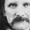
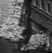
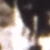

1867-1869
 Canals excvated
1872
water for tree-lined streets
1903

Construction on Roosevelt Dam begins
1911
The Roosevelt Dam
1920
local groundwater exhausted
2012

The Worth of Water: A short documentary of canals in Phoenix